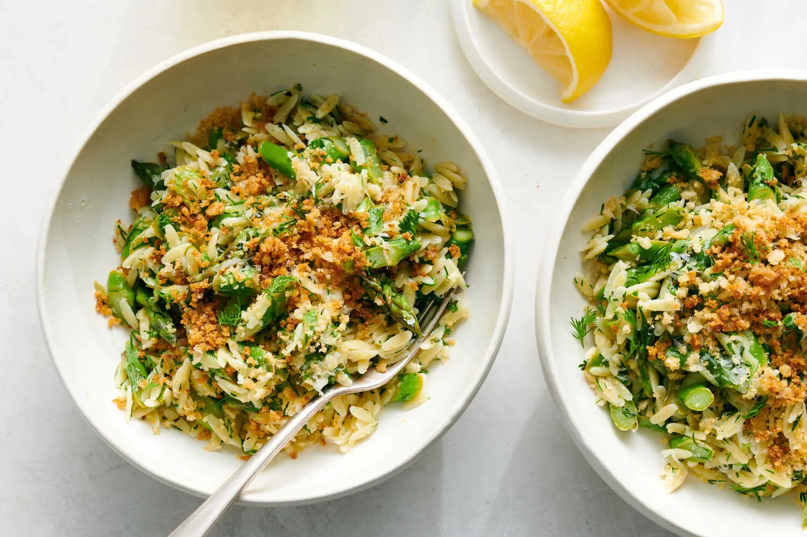
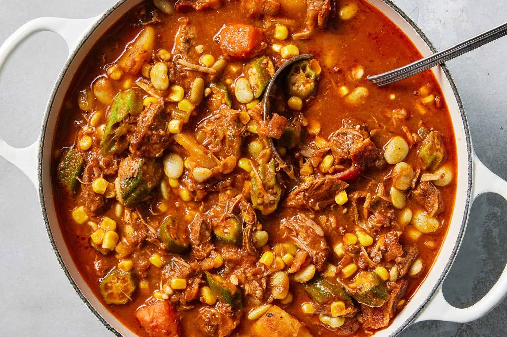
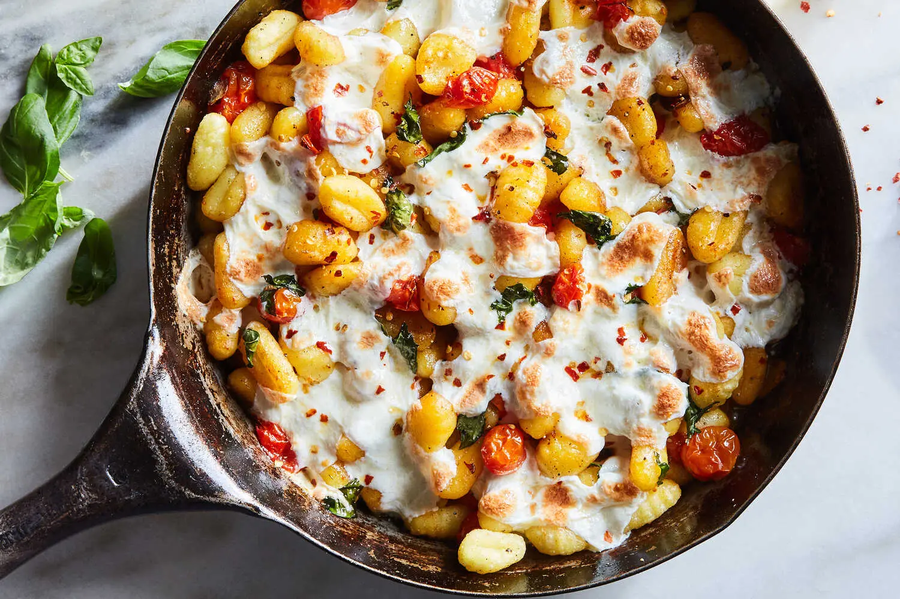
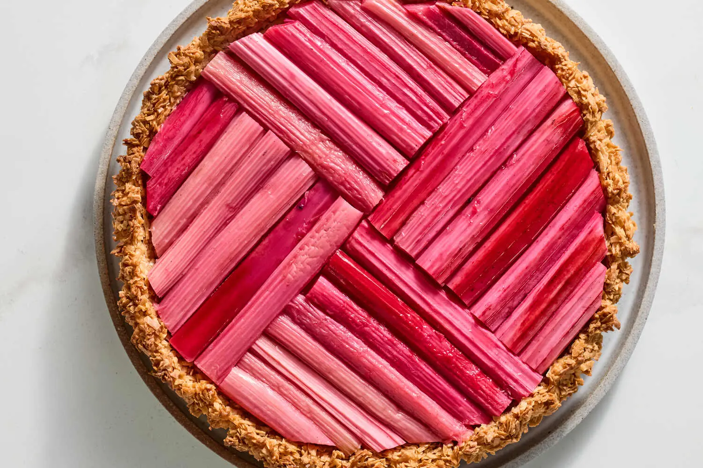
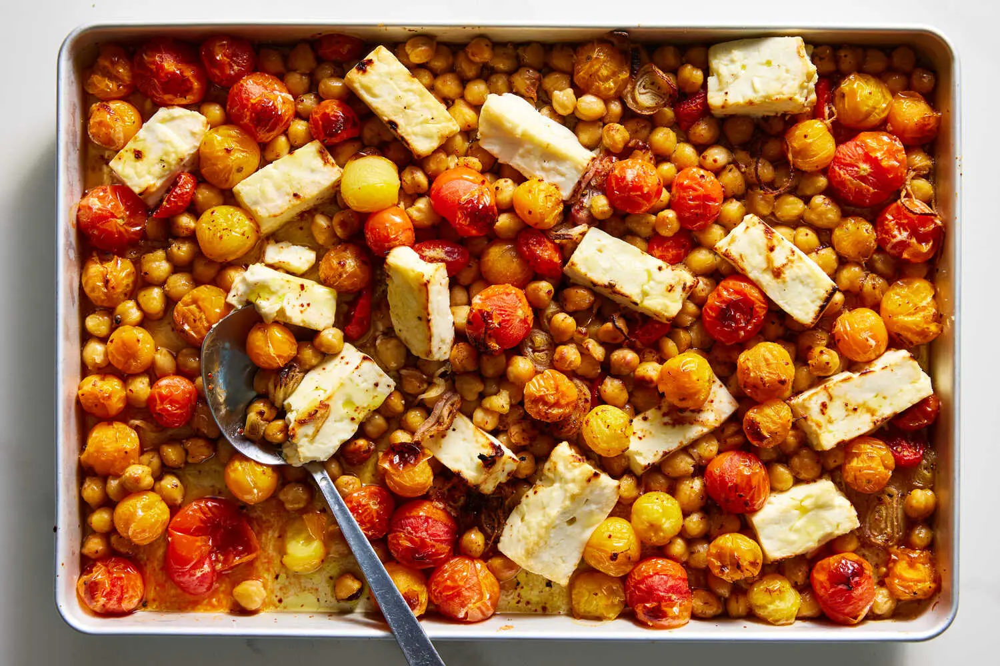
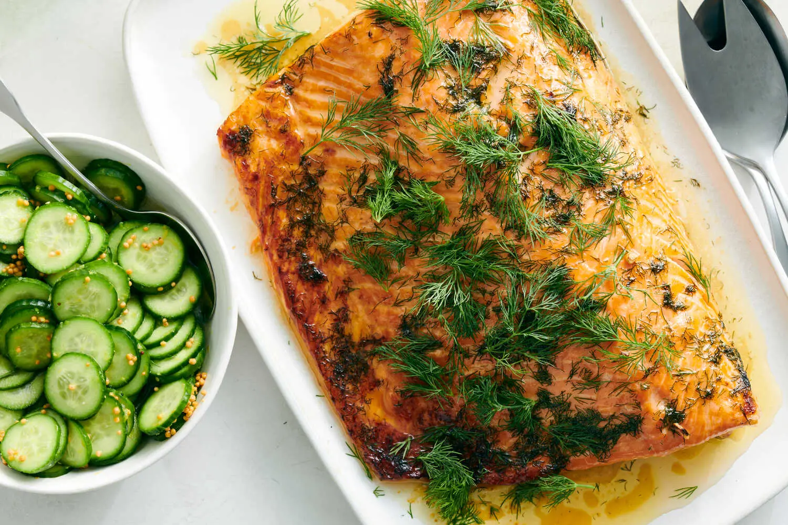
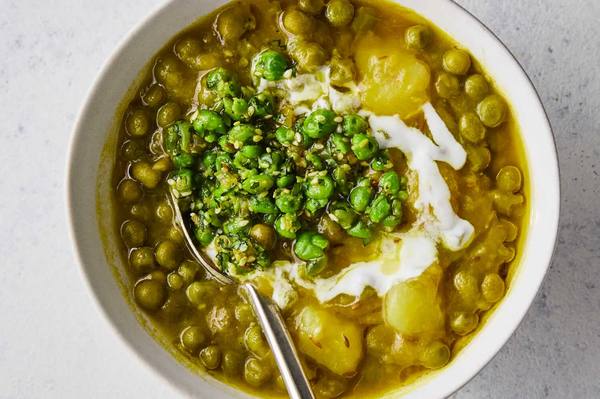

Kook It!
Kook It!







Every spoonful of this pasta has a happy jumble of lemony orzo, grassy asparagus, garlicky bread crumbs, fresh herbs and salty Parmesan. The pasta and thinly sliced asparagus cook together in the same pot, then rest in a lemony dressing while the garlic bread crumbs are toasted, so the pasta has time to absorb as much flavor as possible.
Bring a medium pot of salted water to a boil. Add the orzo and cook until al dente according to package directions. Two minutes before the orzo is done, add the asparagus. Drain the orzo and asparagus. Wipe out and reserve the pot.
While the orzo and asparagus cook, make the dressing: In a large bowl, stir together 3 tablespoons oil and the lemon zest and juice; season to taste with salt and pepper. Add the drained orzo and asparagus and toss to coat. Set aside while you toast the bread crumbs.
In the reserved pot, heat the remaining 2 tablespoons oil over medium. Add the panko and cook, stirring, until golden brown, 3 to 5 minutes. Remove from heat, then stir in the garlic and season with salt and pepper.
Stir the Parmesan and herbs into the orzo, taste, then season with salt, pepper and additional lemon juice, if desired. Top with the toasted bread crumbs and more Parmesan if you like. Serve warm or at room temperature.
Kook It!